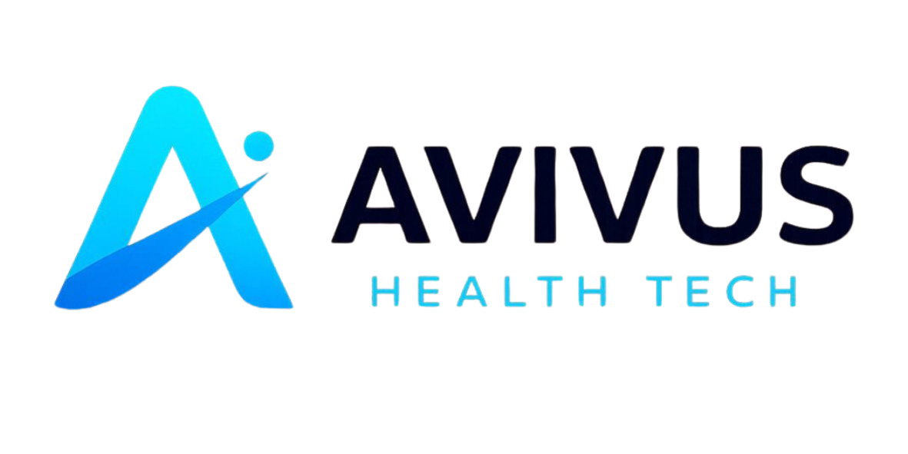

FALTAM APENAS:
Data
11 de Agosto de 2026
Terça-feira
Horário
16h às 20h
Local
Maravalley — Hub de Inovação
Av. Prof. Pereira Reis, 76 - Santo Cristo, Rio de Janeiro - RJ
Como chegarProgramação & Temas
Confira os painéis em debate e a participação de grandes especialistas da área médica e jurídica.
Abertura e Palestra Especial
Dr. Daniel Soranz
Médico Sanitarista, Deputado Federal e Secretário Municipal de Saúde do Rio de Janeiro
Ao longo de sua trajetória, liderou a maior expansão da Atenção Primária da cidade, com a implantação das Clínicas da Família e a ampliação do acesso à Saúde da Família. Também coordenou a resposta do município durante a pandemia da Covid-19, incluindo a campanha de vacinação, e esteve à frente da criação do Super Centro Carioca de Saúde, iniciativa voltada à ampliação do acesso a consultas, exames especializados e à modernização da rede municipal.
Sua atuação é reconhecida pela defesa de um SUS mais acessível, preventivo, inovador e orientado por tecnologia e gestão eficiente.
Dr. Tiago Velloso
Palestra: "Transformação Digital na Saúde: Construindo Valor, Confiança e Sustentabilidade no SUS"
Diretor Geral do Hosp. Municipal Evandro Freire e Diretor Regional do CEJAM no Rio de Janeiro
Gestor por formação e executivo com ampla experiência na gestão de saúde pública e privada, com trajetória marcada pela liderança de instituições hospitalares de alta complexidade, implementação de modelos de gestão inovadores e foco em resultados assistenciais e sustentabilidade. É doutorando em Saúde Coletiva pela UFRJ e possui Post-MBA em Gestão em Saúde pelo COPPEAD/UFRJ, além de Mestrado em Administração pela FGV/EBAPE, MBAs em Gestão de Negócios (Ibmec) e Gerenciamento de Projetos (FGV). É também egresso do programa de educação executiva do MIT | ILP, com foco em inovação e transformação digital.
Atualmente, é Diretor Geral do Hospital Municipal Evandro Freire e Diretor Regional do CEJAM no Rio de Janeiro, liderando a gestão integrada de unidades hospitalares e articulando a rede assistencial e operacional.
Painéis & Palestrantes
A responsabilidade civil médica diante do uso de ferramentas baseadas em IA
Palestrante: William Teodoro da Silva
Advogado, Coordenador de Direito Privado e especializado em Direito Médico
Advogado, Mestre em Direito, Palestrante, Professor e Sócio Fundador do Cursino & Teodoro da Silva Advogados (CTSADV). Coordenador da área de direito privado e especializado em Direito Médico.
Graduado pela Universidade Santa Úrsula – USU. Pós-graduado em Docência Superior pela UCAM, em Direito Civil e Processual Civil pela UNESA, MBA em Gestão Jurídica Aduaneira e Internacional pela Massachusetts Institute of Business (MIB) e ABRACOMEX e Mestre em Direito na Universidade Estácio de Sá.
Proteção de dados pessoais e a LGPD na área da saúde
Palestrante: Karine Teixeira Fernandes Monteiro
Advogada, Sócia Fundadora do Cursino & Teodoro da Silva Advogados (CTSADV)
Advogada, Sócia fundadora de Cursino & Teodoro da Silva Advogados. Atuação nas áreas de responsabilidade civil, direito empresarial, direito digital e proteção de dados. Especialista em Direito Privado (EMERJ) e em Direito Empresarial (FGV), com foco em governança jurídica e inovação tecnológica.
Prontuário Eletrônico como instrumento de segurança jurídica
Palestrante: Carlos Alberto Marenga Junior
Médico Intensivista e Advogado
Médico Intensivista e Advogado. Mestre em Medicina pela Univ. do Porto, MBA em Gestão Hospitalar. Membro da Comissão de Inovação em Saúde do CER - Leblon. Especialista em Medicina Intensiva e Diagnóstico por Imagem. Pós-graduação em Responsabilidade Civil e Direito do Consumidor, reunindo visão técnica assistencial e jurídica.
Infraestrutura, interoperabilidade e mitigação de riscos
Palestrante: Dr. Vitor Montez Vianna
Médico Intensivista e Anestesiologista, Coordenador de UTI no CER Leblon
MÉDICO – CREMERJ 5274324-0. Especialista com RQE em Medicina Intensiva e em Anestesiologia. Pós-graduado em Clínica da Dor. Preceptor da cadeira de Semiologia na Universidade Veiga de Almeida (UVA-RJ).
Coordenador da Unidade de Terapia Intensiva do Centro de Emergência Regional Professor Nova Monteiro (CER Leblon – RJ), rotina da UTI do IETAP-RJ, UCI Expert da empresa Carenet Longevity e membro do comitê executivo de pesquisa e gestão do Centro de Estudos Francisco de Almeida Sales (FAS).
Comissão de Inovação em Saúde: experiência prática da gestão hospitalar
Palestrante: Dr. Berguer Elias Guimarães de Sousa
Médico, Diretor Geral do CER Leblon
Médico, Diretor Geral do CER Leblon. Atuação com médico clínico em emergências na cidade do Rio de Janeiro, MBA Executivo em Administração em Saúde pela FGV.
Atua na gestão estratégica de unidades hospitalares e no Centro de Estudos e Pesquisas Científicas Francisco Antonio de Salles (FAS). Docente na área de emergência, com experiência prática na implementação de inovação tecnológica e governança assistencial no ambiente hospitalar.
Apoio & Patrocínio
